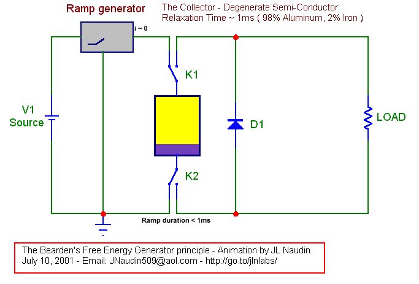
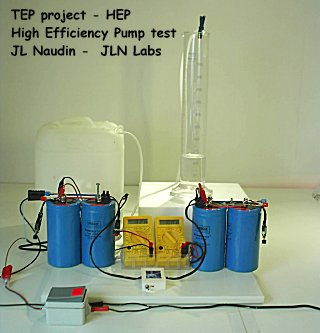

Jean-Louis Naudin
July 10, 2001
JNaudin509@aol.com
The
Tom Bearden Free Energy Collector Principle
Created on 07-10-01 - JLN Labs
- Last update 01-08-03
All informations in this
page are published free and are intended for private/educational
purposes and not for commercial applications
In the paper " The Final Secret of Free Energy " wrote in February 9, 1993, Tom Bearden has described the principle of a device which seems able to tap Free Energy from the energy flow ( the Poynting S-Flow ) in the vaccum during the short transient phase ( the relaxation time in a conductor ) when a source is connected to a resistive load. In this paper, I am trying to clarify a bit, the basic concept of this principle.
Tom Bearden claims that when a Source ( a dipole ) is connected to a resistive load, the most important part of the principle is the information transfered to the load at the speed of light by the S-Flow. The S-Flow is pure EM energy which flows through the space and outside the conductor. This energy is Free and only this part must be used as a "free lunch". Just after this very short time, after that the switch is closed ( the transient phase ), the current begins to flow in the circuit. This transient phase is named the Relaxation Time. In copper, the relaxation time is incredibly rapid, it's about 1.5 x 10-19 sec. When the current flows ( the permanent phase ), the circuit consumes power from the Source and dissipates energy by Joule's Effet, this phase must not be used in our case.
So, according to Tom Bearden, for tapping Free Energy, the purpose is to charge a " Collector " during its relaxation time and then, to switch this Collector to a common resistive load, just before that the electrons begin to flow in the circuit.
<< We took some trapped EM energy density (a chunk of potential gradient, a "voltage" before current flows) from the source, by switching that potential gradient (energy density, which is joules per coulomb) onto a collector (containing a certain number of coulombs of trapped charges) where the potential gradient activates/potentializes/couples-to these temporarily non translating electrons. So the finite collector collected a finite amount of excess energy [joules/coulomb x collecting (trapped) coulombs] on its now-excited (activated) free electrons. Then, before any current has yet flowed from the source, we switched that potentialized collector (with its temporarily restrained but potentialized electrons; with their finite amount of excess trapped EM energy) away from the source and directly across the load. Shortly thereafter, the relaxation time in the collector expires. The potentialized electrons in the collector are freed to move in the external load circuit, consisting of the collector and the load, and so they do so. >> has said Tom Bearden.
For the Collector it is necessary to use a conductive material which has a longer relaxation time than in the copper. This is only for the electronic circuit design and the limitation of its components. So, Tom Bearden has used " a Degenerate Semiconductor " which has a relaxation time of about 1 ms. The Collector is made with 98% Aluminum and 2% Iron.
<< Degenerate semiconductor :
<< Relaxation time :
The Bearden's Collector is charged by using a Stepwise Charging method with a ramp voltage generator, this is commonly used in high efficiency and low power consumption CMOS systems which use an Adiabatic Charging method ( see Charge Recycling Clocking for Adiatbatic Style Logic by Luns Tee, Lizhen Zheng ). With this Stepwise Charging method very few energy is required for charging the Collector. If the Collector is a common capacitor the efficiency is nearly close to 100%. With the Bearden's Collector, this method is used only for transfering the potential. The ramp duration of the voltage must be less than the relaxation time of the Collector used. So, there is no current flow in the circuit ( dQ/dt ~ 0 ) during the charging sequence. When the Collector is fully charged, all the free electrons are "potentialized", they have their own kinetic energy gained by the potential only produced by the S-Flow. The next step is to use these "potentialized electrons "by switching the circuit on the Load, now, the Collector acts as a Free Source of Energy, it acts as a dipole energized by only the S-Flow of the original source ( V1 in the diagram below).....

I hope that, with this short description, I have been able to clarify a bit the Tom Bearden's " Final Secret of Free Energy ". Now, only a real working device will prove if his claim can be more than a simple overunity dream...
Good thinking and explorations,
Jean-Louis Naudin
July 10, 2001
Jean Louis, Yes, I think you captured it precisely. In real circuits similar to that one you drew and animated, one should place a diode in the "back emf line" from the ground to the high side, so that current can only pass in the normal one-way direction in the circuit once the "potentializing source" is switched away. In theory, a coil of degenerate semiconductor material can also be "charged with pure potential without initial current" in this fashion. There is no violation of energy conservation. Another way of looking at the switched degenerate semiconductor circuit is that one charges it with voltage only, completely statically, with no j(phi) current permitted during "excitation" or "potentialization". One then switches the voltage source away, having drawn only potential from it and not power, and the circuit then changes itself and dissipates this excess "static" energy in the load, by automatically converting itself into a normal dynamic conducting circuit as the electrons "relax" and move as current. Energy is energy, whether static or dynamic. Yet just to transfer energy alone, does not require work (at least in theory; in the real world one must pay for some switching costs to get it all timed and switched). For a rigorous justification, our most advanced theory today is quantum field theory. An axiom of that theory is that the potential (anywhere, in space or on a circuit) can be changed freely and at will. That is called "gauge freedom". Electrodynamicists do it to the Maxwell-Heaviside equations (following Lorentz, to reduce the equations to a simpler subset) so that the resulting equations are easier to solve and numerical methods can be largely avoided. However, they always insist that we "do it twice", changing both phi and the A-potential so that the two new forces produced are deliberately made equal and opposite. Then they claim that the new equations are in every sense identical to the former. They are not. In a real system, one has assumed that (1) the potential energy of the circuit has been freely changed, twice, (2) two new forces have appeared freely in the circuit, (4) the stress and stress-energy of the system have been deliberately changed, (4) the originator has been so stupid that he deliberately arranged these two free forces to be equal and opposite, to fight each other to a draw, so that the freely energized circuit cannot use any of its free regauging energy to do work in a load (which requires translating something, in this case electrons as electrical current carrying the excess potential for discharge in the -- say -- resistive load. In other words, conventional electrodynamicists insist that we just "bottle up" that excess free potential energy, so that the circuit is totally prevented from discharging it in the external load to do some free work. Well, if one is free to change the potential energy of the circuit at will (and all electrodynamicists assume this), then why not do that with just a single potential change, so that a net free force appears and is available for use? Then the system can be "released" to use that force to exhaust that excess energy that was freely added while the force was held "static" and not allowed to move and do work. Gauge field theory and the standard Lorentz symmetrical regauging of the Maxwell-Heaviside equations already implicitly assume that this can be done. Another way to see it is that initially, the back emf created by Newton's third law from the "frozen electrons", does create the "equal and opposite force temporarily", thus "bottling up" that free potential energy, but only temporarily ! Then that back-force relaxes as the electrons gradually move, and the input free force remains and now can translate electrons through the load, doing free work as it dissipates in the load. Let me put it this way. If it CANNOT be done, then that falsifies the gauge freedom principle itself, which in turn falsifies gauge field theory and most of the advanced physics of the day. I don't think all that can possibly be falsified, because it has a vast number of experiments consistent with it, all across physics. But if it can, then that is itself momentous. So either way you go, it's a momentous experiment. Such "asymmetrical regauging" so as to have a resulting free force as well as free energy, is also a means of extracting energy directly from the vacuum. The vacuum is highly active, containing great energy density, so can also be regarded as a very intense scalar potential. For electrical circuits, it can be regarded as a giant voltage, sort of like a "high power line". That is our usual "ambient ground potential", and all other potentials are thus changes to that "ambient ground potential". So to make a simple potential is to bunch energy in the local vacuum, "collecting" energy from the universal vacuum and into that local 'bunching area" or in a local system about which the energy is "bunched". Any potential is also a curvature of spacetime, and that is a change in the local energy density of spacetime (and the vacuum) a priori. Another way to regard the degenerate semiconductor circuit is to just see that moving voltage alone, with no current, is not power. Rigorously, P = Vi, and if i = 0, then P = 0. If P = 0, then W = Pt = 0, so there is no work W involved in simply moving energy that does not change form. Hence the notion of gauge freedom, or pure changing of potential energy being "free" and costing nothing in theory. So the trick is to use that nice abstract notion in the real world and in a real circuit. The ordinary copper conductor, with its extraordinarily fast reaction time of the electrons, will not give you time enough for any noticeable amount of "free" potential energy to move onto the circuit, without current, before you can switch away. But if the "conductor" itself cooperates with you, and becomes first an "insulator" for awhile and then automatically changes itself to a conductor, then you can use this to produce an overunity mechanism. But only if the "conductor" holds its "insulator" state long enough for you to get the potential onto it without current flowing, and then get off and complete the circuit by switching. It costs nothing to transfer potential only, onto some trapped charges in an "insulator". The trick is to get the circuit to then be "smart" and change itself into a conductor, so that the dissipation of that energy can occur. Note also that using high static voltage can freely transfer a great deal of energy to some trapped charges. The energy transferred by potential V to trapped charges q is given by Vq. V is defined as "joules per interacting coulomb" and q is the number of coulombs interacting, though not able to move (translate). For a given amount of trapped q, the amount of energy transferred is Vq, and it can be free as long as the electrons do not translate. Some years ago we were looking into doping 2% pure iron into very pure aluminum, and making the degenerate semiconductor wires out of that. However, it requires a metallurgy lab to do it, as it has to be done under an inert atmosphere because Al and Fe melt at different temperatures. To make the alloy thus takes some doing, and we never were able to get any made to experiment with, and of course could not make it ourselves. There appeared to be some clever things one could do with a circuit made only of coils, capacitors, diodes, resistors, and degenerate semiconductor wiring. Addition of transistors also increased the range of possibilities. Actually Nikola Tesla was able to "shuttle" energy freely in his patented circuits, and this can only be seen in a higher symmetry EM analysis; vectors and tensors will not show it. But to see it clearly, see T.W. Barrett, "Tesla's Nonlinear Oscillator-Shuttle-Circuit (OSC) Theory," Annales de la Fondation Louis de Broglie, 16(1), 1991, p. 23-41. Barrett used quaternion EM analysis, which shows it clearly. Barrett went on to improve on Tesla's methods, and obtained two patents in the signal area. See T.W. Barrett, "Oscillator-Shuttle-Circuit (OSC) Networks for Conditioning Energy in Higher-Order Symmetry Algebraic Topological Forms and RF Phase Conjugation," U.S. Patent No. 5,493,691. Feb. 20, 1996. Barrett is one of the pioneers of ultrawideband radar. Meanwhile, I'm still pretty weak physically, but getting a little stronger every day, though I can only work for a few hours and then only leisurely. A couple more months and hopefully I will be back almost to normal functioning again. Anyway, good experimenting and I wish you excellent results. I hope many of the researchers in your group will be able to obtain some suitable degenerate semiconductor material, and do some successful experiments. Very best wishes, Tom Bearden |
||||||
Source documents :

The High Efficiency Pump experimentReturn to the JLN Labs Home Page